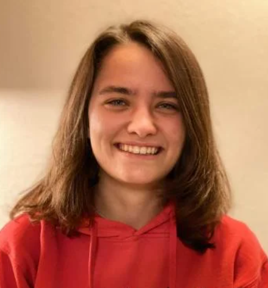
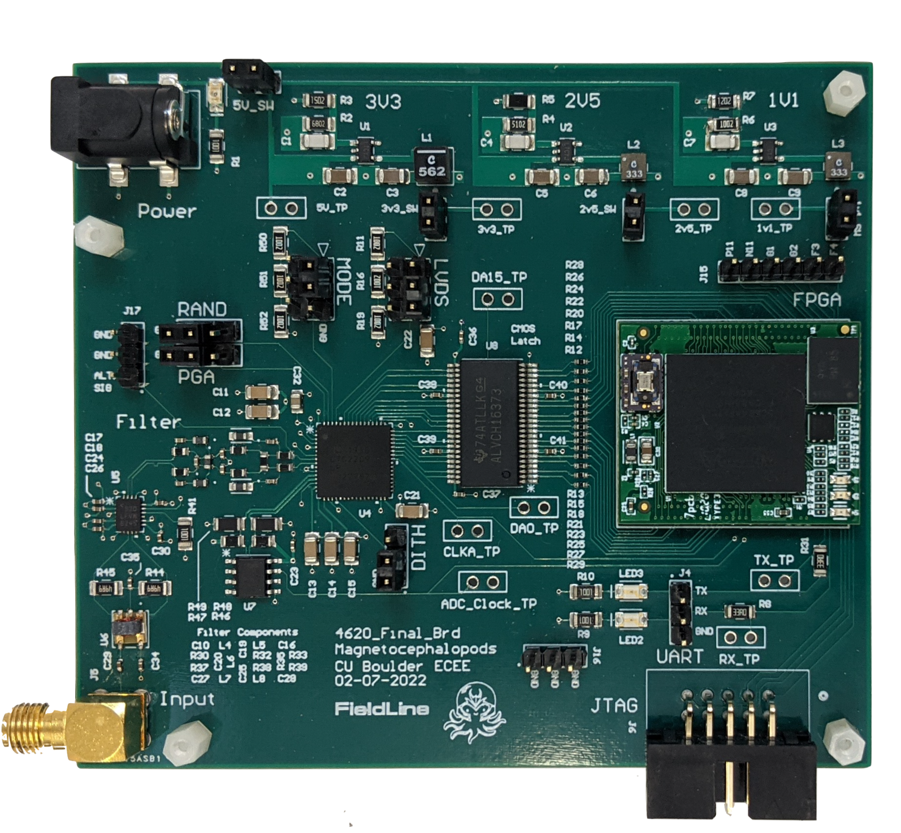

Phaedra Sophia Curlin
About me

I am a 2nd year PhD student in Electrical Engineering at the University of Colorado Boulder under the supervision of Prof. Tamara Silbergleit Lehman. Currently, my research focus is on security metrics for computer hardware systems.
I obtained my BSc in Electrical and Computer Engineering at the University of Colorado Boulder in 2022. During my undergraduate degree, I researched applications of VR/AR to lunar robotics under the guidance of Prof. Jack O. Burns.
You can reach me at: phaedra.curlin{at}colorado.edu
Projects
Free Induction Decay Frequency Extraction Engine (2022-2023)

Currently, methods for measuring the magnetic field produced by the brain are expensive and cumbersome. FieldLine Inc. has developed a magnetometer targeted towards such applications that does not require the use of shielded rooms and can provide data in real-time. For our senior design project, we designed and created a frequency extraction engine to be used with our sponsor's, FieldLine Inc.'s Free Induction Decay magnetometers. See our project here.
Work supported by FieldLine Inc.
Virtual Reality Digital Twin for Troubleshooting Lunar-based Assembly Failures (2020-2022)

NASA will return to the Moon to conduct lunar and space science as well as prepare for human exploration missions. NASA's current rover failure response methods use hardware duplicates which are costly and time consuming to assemble. To address this, we developed and assessed a VR digital rover twin in a simulated environment using novel technologies to support lunar robotic missions missions like FARSIDE in case of assembly failures.
Work supported by NASA-funded NESS and NASA Solar System Exploration Research Virtual Institute.
Guides
I have collected here some tips and tricks on what I have learned to use as future reference for myself and others.
gem5
Last modified: